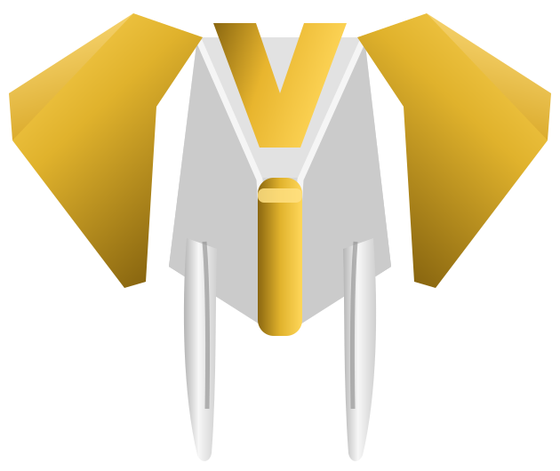

Generando Caminos
Rediseño del sitio
Vista previa de la página Ventas y Rentas de Vazal Maquinaria Pesada: catálogo completo, tendido de asfalto, servicios de obra y formulario de cotización.

Generando Caminos
Vista previa de la página Ventas y Rentas de Vazal Maquinaria Pesada: catálogo completo, tendido de asfalto, servicios de obra y formulario de cotización.